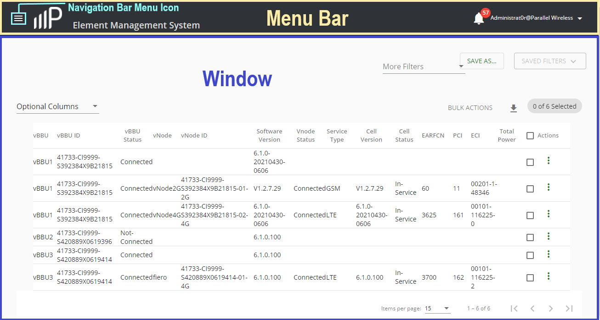
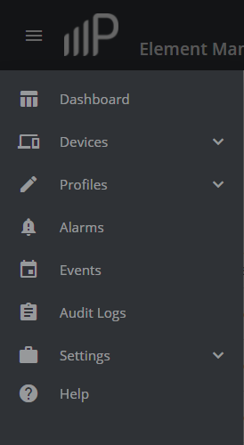
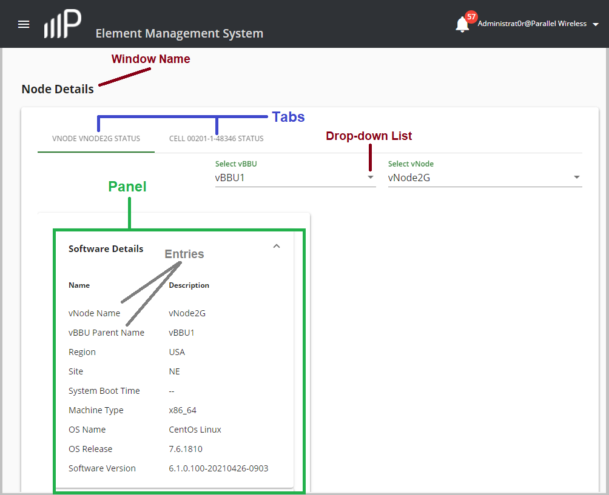
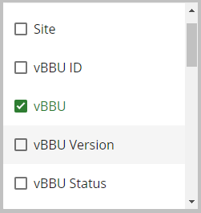

PW EMS GUI Introduction
This section describes the various elements that comprise the PW EMS GUI.
The main PW EMS GUI elements are described below:
- The Device Summary window appears by default after logging into the PW EMS. The following figure describes some of the PW EMS GUI elements, which includes the Navigation Bar Menu Icon, Menu Bar, and Window.

- Navigation Bar Icon - Click to access the Navigation Bar Menu. You can also find the server's high-availability (HA) status, the current server time (where the server is located), and sign out of the PW EMS system here by clicking next to the user name.
- Menu Bar - From this location you can access the navigation bar, system information, and the ability to log in and out of the system.
- Window - Displays information for Navigation Bar items.
- Navigation Bar Menu - The following Navigation Bar menu items are available. Each item opens a window to the right of the Navigation Bar for the menu item.

|
Item |
Description |
|---|---|
| Dashboard |
|
|
Devices |
From this menu item you can view an inventory of vBBU devices, their details and status. You can also view and add HNG devices, add site information for devices, and upload device images and upgrade them. Upgrades or rollbacks can be scheduled operations or performed immediately. |
| Profiles |
From this menu you can configure LTE radio profiles for 2G and 4G, configure the system profile, which includes performance monitoring and the configuration of a security profile for access devices, and configure the SON profile. |
|
Alerts |
View the system-wide active alarms, the alarm history, the event history, and the live event log. Each Alarms window summarizes the current number of unacknowledged and active alarms for critical, major, and minor severity, and allows you to filter based on time stamp, status, system name, object name, description, severity, whether the alarm has been acknowledged, and the user assigned to address a given alarm. |
| Events | Click to view the precise history of events created and recorded on the PW EMS system. |
| Audit Logs | Click to view user activities on the PW EMS that are logged and available to view user-performed operations information. |
| Administration | Click to configure organizations and their respective users who access the PW EMS. |
| Help | Access on-line documentation for the PW EMS product. |
The following figure shows some of the PW EMS GUI window items that are described below:

- Tab(s) - Click to access different components that are nested in a window.
- Window Name - This name matches the Navigation Bar menu item that you selected.
- Field - This is used throughout the GUI to manually enter information for an item or parameter such as a name or description, and in some cases a value.
- Entries - This represents data entries that display in the GUI.
- Panel - This represents a major part of a component.
- Section - This represents a grouping of parameters associated with a component part.
- Drop-down list - This is used throughout the GUI to select a value for an item or parameter.
- Checkbox - This is used to check one or more items or parameters in the GUI that you want to display or configure in a task. The following example shows optional columns you can select to dispay vBBU attributes:
